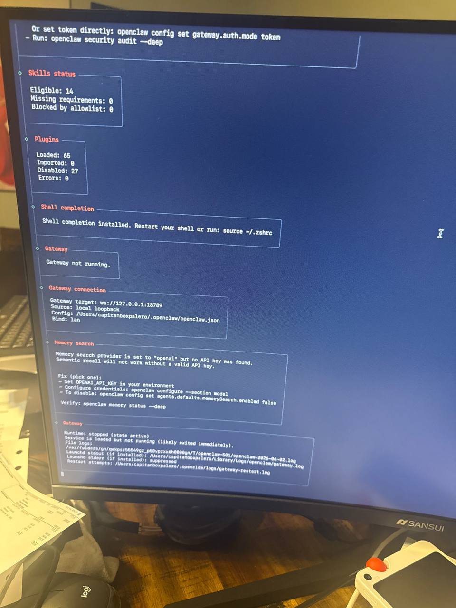
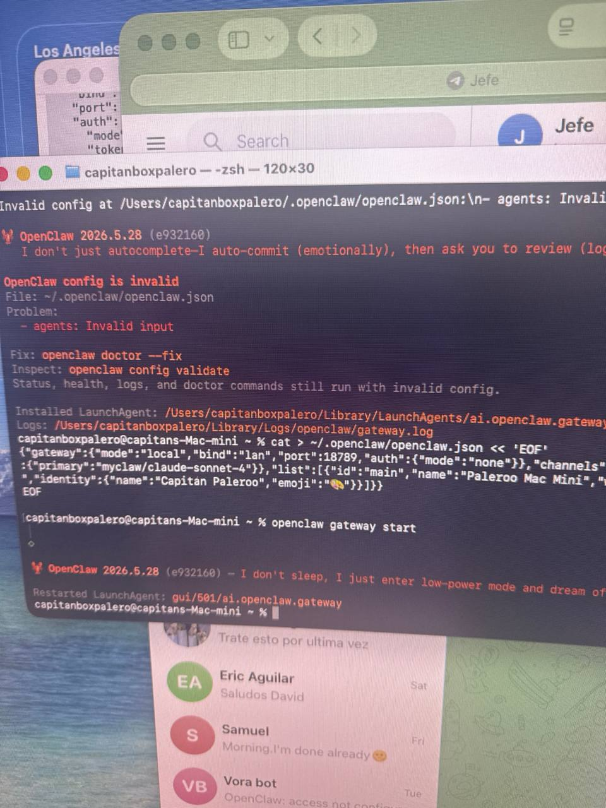
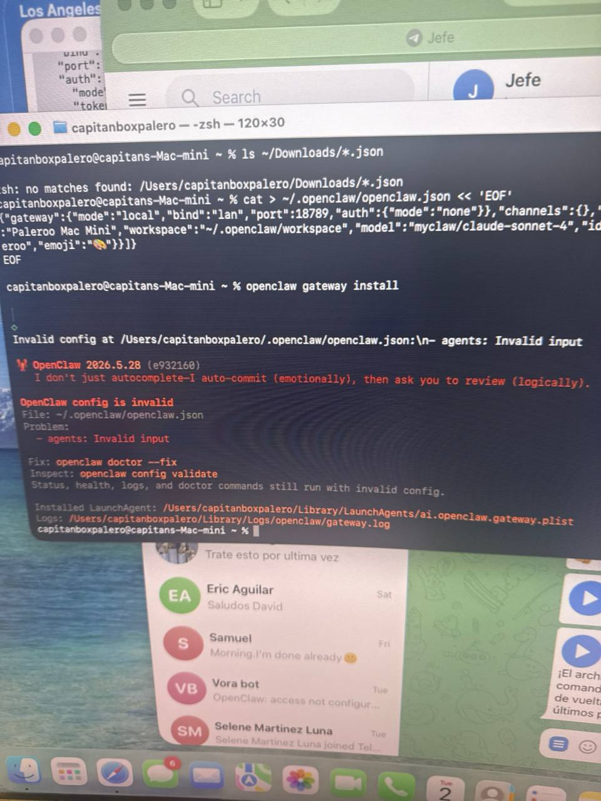
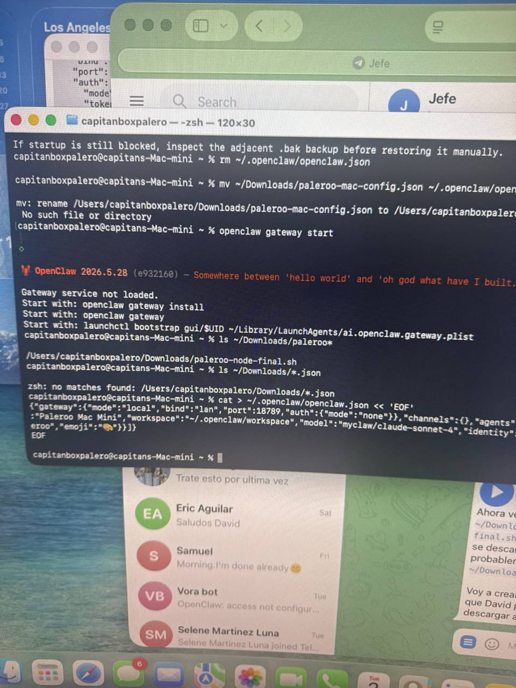
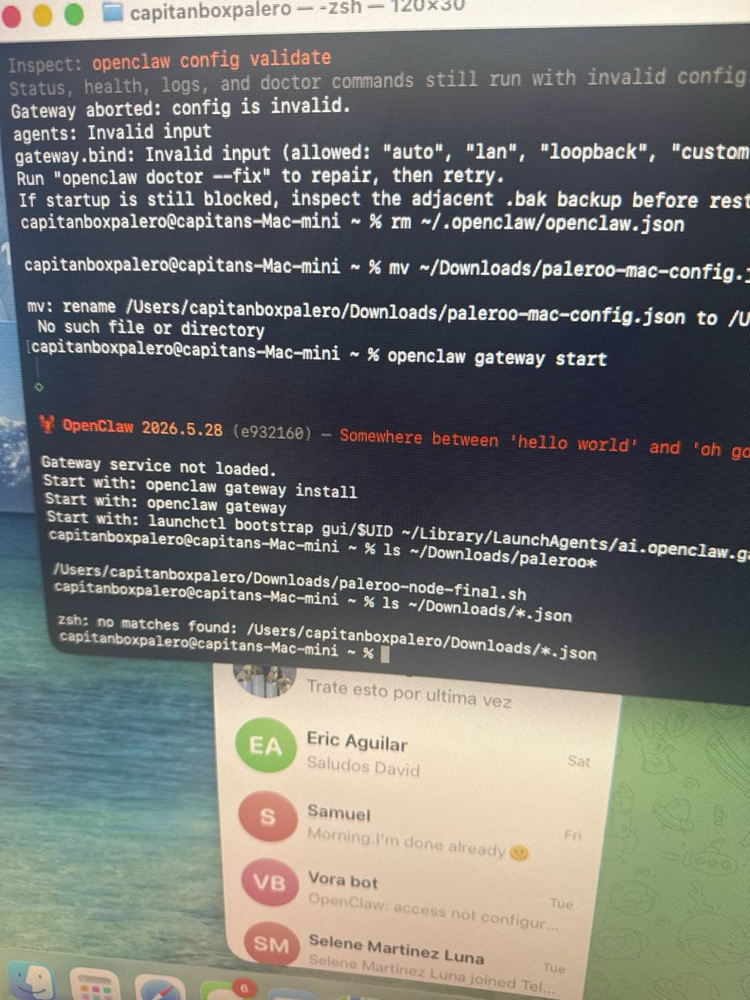

Protect your home from water damage with professional gutter solutions. Seamless gutters, repairs, and gutter guards available.
Properly functioning gutters are essential for protecting your home from water damage. Without quality gutters, rainwater can erode your foundation, damage your landscaping, cause basement flooding, and lead to costly repairs. ST Roofing & Construction LLC provides professional gutter installation and repair services throughout the NYC metro area.
We offer seamless gutters in a variety of colors and materials, professional repairs for existing systems, and gutter guards to minimize maintenance. Our experienced team ensures your gutters are properly sized, correctly pitched, and securely attached to effectively channel water away from your home.
Custom-made on-site to fit your home perfectly. Fewer seams mean fewer leaks and a cleaner appearance.
Fix leaks, sagging, detached sections, and damaged downspouts. Restore your gutters to proper function.
Keep leaves and debris out of your gutters. Reduce maintenance and prevent clogs and water overflow.
Installation, repair, and extension of downspouts to ensure proper water drainage away from foundation.
Lightweight, rust-resistant, and affordable. Available in many colors. Most popular choice.
Premium appearance that develops a beautiful patina. Extremely durable with 50+ year lifespan.
Maximum strength for harsh conditions. Galvanized or stainless options available.
Budget-friendly option that won't rust or corrode. Easy installation for DIY enthusiasts.
Water spilling over the edges during rain indicates clogs or inadequate sizing
Gutters that sag or detach from the fascia need immediate attention
Water dripping through seam connections indicates failing seals
Water pooling near your foundation after rain signals drainage problems
Get professional gutter installation or repair. Free estimates available!
Click any photo to view full size.





Gutter costs depend on the linear feet needed, material selected, and your home's configuration. We provide free estimates with detailed pricing so you know exactly what to expect.
Sectional gutters come in pre-cut pieces joined together at seams, while seamless gutters are custom-made on-site from a single piece of material. Seamless gutters have fewer seams, reducing leak potential and providing a cleaner appearance.
Gutter guards help prevent leaves and debris from clogging your gutters, reducing the need for frequent cleaning. They're especially beneficial if you have trees near your home. We can help you decide if they're right for your situation.
Without gutter guards, we recommend cleaning gutters at least twice a year - in spring and fall. If you have many trees nearby, more frequent cleaning may be needed. Gutter guards significantly reduce maintenance requirements.